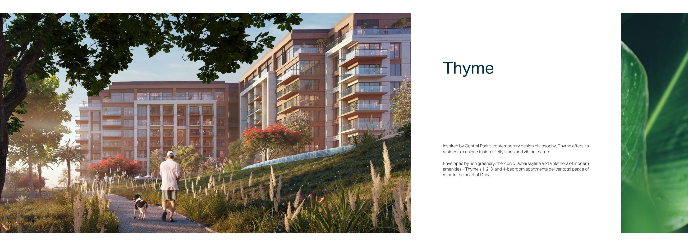

Thyme · off-plan resale
Thyme
Новая резиденция у парка на финальной стадии. Подходит тем, кто хочет войти до передачи ключей и получить новый объект в 2026 году.
- Планировки
- 1–4 спальни · 71–354 м²
- Текущий ориентир
- 1BR от AED 2,2 млн · ≈ $599 тыс.
- Формат оплаты
- Исходный план 70/30; текущий вход считаем по уже оплаченным продавцом платежам
- Стадия
- Off-plan resale · передача ключей в 2026 году